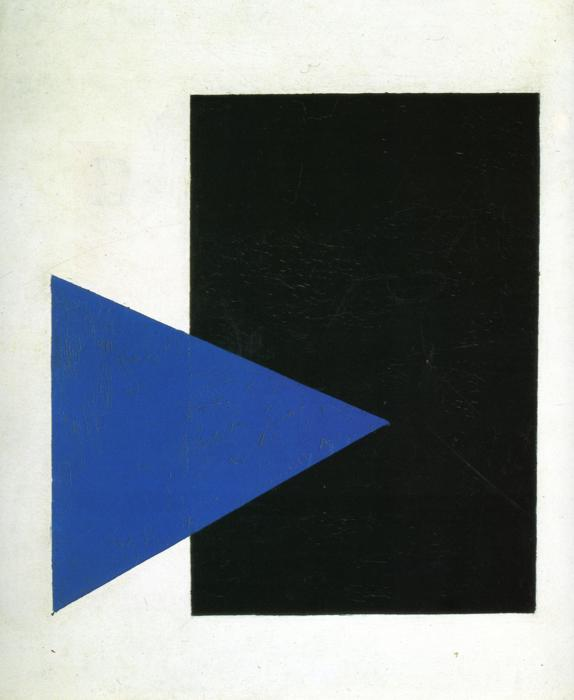
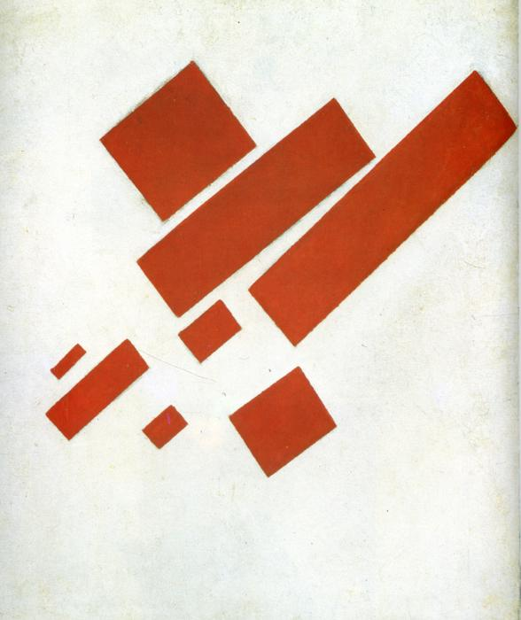

Динамический супрематизм
«Супрематизм устанавливает связи с Землёю, …изменяет всю архитектуру вещей Земли, соединяясь с пространством движущихся масс планетной системы». (К. Малевич)
Пафос динамического супрематизма — свобода, полёт, стремительное движение (так декларирует его сам автор). Существенно и то, что в работах этого стиля не отображаются натурные объекты (так заявляет Малевич в своих литературных трудах).
Однако, при ближайшем рассмотрении обнаруживается, что это не совсем так, точнее — совсем не так. Многие работы в этом стиле Художник назвал вполне предметно: «Полёт аэроплана», «Мальчик с рюкзаком», «Живописный реализм футболиста», «Автопортрет»…
Те же картины, которые носят абстрактные названия, бoльшей частью напоминают конкретные предметы — и от этих ассоциаций трудно отделаться (см. далее).
Некоторые летающие плоскости явно ограничены в своём полёте — то ли рамой картины (обрезом), то ли тормозящими движение плоскостями, пересекающими их. Вместо свободного полёта в космос мы видим столкновение летящего тела с непреодолимым препятствием. Наконец, анализ композиции супрематических работ убеждает нас в том, что они построены по всем канонам классической эстетики, так что о свободе как основополагающем принципе здесь говорить не приходится.
Не будем об этом жалеть — взамен провозглашенных Малевичем принципов его искусства остаётся тот, о котором он умолчал, а исследователи его творчества не сочли возможным объявить.
Это принцип «зеркала». Его работы отображают ситуацию в России и в мире. Они говорят о состоянии умов и чувствах людей более, чем о полётах в пустыню неизвестных сфер. Именно этим можно объяснить неиссякающий уже сто лет интерес людей из разных стран к творчеству Мастера. Ведь и в наше время есть проблемы, подобные прежним.
Рассмотрим наиболее интересные работы Малевича в стиле динамического супрематизма под этим (вышеизложенным) углом зрения.

9.
Эта работа представляет собой переход от статического супрематизма к динамическому.
Правильную устойчивую классическую систему атакует агрессивная динамическая сила. Не это ли визуализация главной позиции Малевича: атака супрематизма на классические устои академизма? «Академия — заплесневелый погреб, где самобичуют искусство».
Смел атакующий синий клин, безжалостно поражает он прочный черный прямоугольнок — такой классически — пропорциональный, с отношениями сторон 2:3. От чрезмерного напряжения синий клин слегка перекосился: его стороны равны 11х, 12х и 13х. Поэтому острие клина не попало на узел структуры черного прямоугольника. Классическая традиция не пострадала от дерзкого нападения авангарда. Первое доказательство этого — выполнение всех заветов классической эстетики, восходящих к временам Платона и Аристотеля,за исключением одного: супрематизм отображает не вещи, а идеи и отношения вещей. И даже не теряет связей с видимым миром. Один из примеров — (Рис. 18). На первый взгляд, здесь царит хаос. Присмотревшись, замечаем, что здесь изображен рабочий стол чертёжника с доской, лампой для её освещения, мелкими инструментами и обрезками бумаги под столом. Чем не реализм?
Построение 18-е. 1915.
В этой композиции нарушены два принципа супрематизма — свобода движения и свобода отношений элементов. Главная фигура упирается в угол рамы картины (т.е. останавливается), а все её «попутчики» плотно прижаты к ней и друг к другу. Большой прямоугольник аккуратно делится на четыре квадрата, плавно уменьшающихся от первого к четвёртому. Число фигур — пять. Это классическое число — пятиконечная структура Человека и его руки (не считая ноги).
11. Супрематическая живопись. 1916
В этой работе доминирует центральная группа из тёмно-синего квадрата, черной горизонтальной полосы и зелёной полосы, почти параллельной боковой стороне квадрата. Отношение ширины квадрата к длине чёрной полосы — 1:2. Вся композиция состоит из 7 групп: одной центральной и 6 периферийных. Все периферийные группы состоят из 3 или 7 фигур, не считая одной полоски в нижнем правом углу картины. Случайны ли эти числа? Их повторяемость утверждает нас в мысли: нет, не случайны. Это канонические библейские числа, с которыми связаны важнейшие ценности и святыни. Как видим, здесь Художник вполне отдаёт дань традиции. Что же касается движения и свободы — то этому препятствует широкая черная полоса, которая делит всё поле картины в отношении 3 к 5, то есть в «золотом сечении». Она напоминает, что кроме движения, есть ещё одна ценность — покой, а кроме пустого белого неба есть прочная черная земля.
Признание законов диалектики — убедительный аргумент, подтверждающий мудрость Художника.
12. Живописный реализм. Мальчик с рюкзаком. Красочные массы в четвертом измерении
Эта работа отличается своей строгостью и классичностью.
Сочетание цветов — триада ч — к — б, актуальная по сей день.
Пропорции рамы и двух фигур также классичны. На чертеже видно, как чётко вписаны квадраты в решетчатую структуру, заполняющую поле.
Через точки А В С Д проходит изящная линия, отрезки которой почти равны (80:80:87).
При взгляде на композицию (рис.12) возникает образ часов с маятником. К обильной символике этой работы прибавляется ещё один символ — часы. Часы — это Время, а Время — это само Бытие.
13. Динамическая композиция №57. 1916
Группа из трёх главных фигур летит в космос. Однако — и это уже происходит не впервые — её полёту препятствует рама картины. К тому же путь её не прям: она летит по изящной ломаной линии АВСД от нижнего левого угла полотна к верхнему левому.
Вдали в белом пространстве летят ещё пять групп супрематических фигур. Три из них летят в направлении, перпендикулярном пути главной группы, и две следуют этому направлению. Число элементов в большой и малых группах — 3, 5, 7, 9. И только в одной из них 4 элемента (Вспомним: боги любят нечетные числа).
Почему в бесконечно-мерном космическом пространстве Художник выбрал два доминирующих взаимно перпендикулярных направления, используемых во всех визуальных искусствах всех времён? Почему бы не ввести в употребление острые углы, веерообразные формы или спонтанно-хаотические структуры?
Прямоугольники, составляющие главную группу, послушно сокращаются в перспективе, образуя трапеции. Отношение длин фигур №1 и №2 равно 0, 6 (золотое сечение). Фигуры №2 и №3 почти равны, но их длины чётко обусловлены: если продолжить их длины двумя квадратами каждую, то они станут равны.
Оказывается, в этой свободной и красивой композиции всё правильно и предсказуемо, потому она и красива. Особенно восхищает меня крохотный черный квадратик, прислонившийся к трапеции №1. Это уже сюрреалистический приём. А черный треугольник справа от фигуры №3 — приятное напоминание о том, что в мире существуют не только прямоугольники.
Что мы читаем на этом полотне?
- – Неизбежность контрастов, переходящих в конфликты.
- – Стремление к полёту и препятствия к этому.
- – Единство и родство всех форм мира.
- – Стремление к полёту и препятствия к этому.

14. Супрематизм с восемью прямоугольниками. 1915
Эта работа — одна из первых в стиле супр-ма. Сюжет её — движение.
Вспоминается лозунг футуристов: «Движение — всё, конечная цель — ничто». Движение — условие существования материи. В нашем уютном макромире часто наблюдаем полёт различных природных тел: «Мчатся тучи, вьются тучи, вьётся пыль из-под копыт…»
Художники-футуристы пытались изобразить различные объекты в движении: автомобиль, аэроплан, собаку, девушку на балконе…
Прямоугольники на картине Малевича чётко различаются по размерам: большие, средние и малые. Все они делятся на целое число квадратов — 3, 4 или 6. Пропорции их выражаются отношениями целых чисел: 1:2, 1:3, 1:4, 1:6. Математик назвал бы эти числа и отношения красивыми, архитектор порадовался бы их простоте и чёткости, а философ припомнил бы бесконечное множество их символических значений.
Эскадра космических кораблей летит по Вселенной к общей цели (а может быть, без таковой — как все звёзды и планеты?) Эта работа — предвестник «планит» — ансамблей архитектурных объектов, которыми Малевич с сотрудниками займётся в конце 20-х годов.
15. Супрематизм. 1915
Это сложная композиция, состоящая из центральной фигуры и пяти групп, сопровождающих её.
Тяжёлая трапециевидная башня прикована к земле силой земного тяготения. Она пытается взлететь, но неудачно: три её угла встречают препятствие в виде рамы картины, а четвертый угол едва-едва успел подняться над горизонтальной плоскостью.
Рождённый стоять не может летать. Таков итог внимательного рассмотрения картины. Есть нечто трагическое в этой черной башне, зависшей между небом и землёй. Возможно, в ней замуровано сокровище — золотая пластина благородных пропорций: EF:DE=0,585 (очень близко к 0,6). Вот что не даёт башне взлететь! Она скопила слишком много золота. AB:BC=0,62 Желтая пластина помещена в башне также не без расчёта: EF:LN=0,615.
Главную фигуру окружают три группы мелких, и ещё две занимают нижнюю половину картины. Все они составлены по одинаковому принципу: более крупную фигуру сопровождают мелкие. Количество их во всех группах нечетное: 3, 5, 5, 5, 3. Углы наклона осей всех элементов композиции — 0 или 45° к горизонту.
О чём говорит нам эта композиция?
- – О свободе и скованности движения
- – О контрастах бытия
- – О единстве всего сущего (все элементы композиции произошли от квадрата.
- – О безграничности пространства (как далеко залетели группа I и четвёртая полоска в группе VI)
- – О нижней и верхней сферах жизни…
- – И ещё — о непреодолимости общечеловеческой органической эстетики в художественном творчестве.
- – О контрастах бытия
16. Супрематизм. Желтое и черное. (Supremus №58) 1916
Эта композиция до предела насыщена формами. Пространство заполнено летающими прямоугольниками, полосами и полосками. На первый взгляд, здесь царит хаос: полоски и квадраты сталкиваются, наезжают друг на друга, поворачиваются как угодно.
Мы рады: наконец-то достигнут супрематический идеал — полная свобода. Однако, радость преждевременна. Даже при беглом взгляде видим: конфигурация крупных полос явно напоминает мачту корабля с парусом, или, если вам больше нравится — самолёт, подбитый взрывом и рассыпающийся на обломки. Он всё ещё летит по инерции, но скоро упадёт.
Предметные ассоциации — уже достаточный повод отказать произведению в абсолютной оригинальности. Но ценность его не в изобретении новых форм, а в визуализации «злобы дня», состояния умов и чувств человечества в трагические дни первой мировой войны.
Здесь мы видим: противостояние сил (стремлений, идеологий, целей); борьбу хаоса и закона, власть сильных, гибель слабых…Кто победит? Картина не внушает оптимизма — слишком много препятствий на пути сил добра.
Несмотря на рассыпчатость структуры, в ней заметно превалирует принцип креста — пересечения линий под углом 45° или около того. Центральная фигура даже напоминает «древо», на котором был распят Спаситель. Это свидетельствует (не в первый раз) о связи супрематизма с традицией.
17. Супрематическая живопись. 1915 — 1916
Эта композиция — самая изящная из всего наследия Малевича.
Главные герои здесь — три тонких стержня — AB, CD и EF. Они образуют подобие буквы lamed. Значение этой буквы — число 30, состоящее из трёх чисел: 2х5х3. Все они многозначительны и миростроительны. 5 — это жизнь, 2 — Ян и Инь, начало и конец; 3 — тройственное божество — Отец, Сын и Дух святой.
Легкая, но прочная конструкция из стержней придала движение группе из пяти четырёхугольников.
Обратите внимание, как чётко делится поле картины пополам диагональю HG, а сама эта диагональ делится точкой 0 в отношении 1:2. При этом линии CD и EF оказываются симметричными относительно диагонали HG (хотя и не абсолютно точно). Симметрично расположена также группа синих и красных четырёхугольников вверху картины.
Если здесь есть то, что называется свободой, то это хорошо рассчитанная классическая свобода, а если есть небольшие отклонения от абсолютной правильности — то это общеобязательный закон мутаций, без которого не существовала бы материя и её развитие, и сама жизнь.
18.
19.
В наши дни достаточно проблем во всех областях жизни. Стремление к свободе творчества и новаторству было присуще художественному авангарду во все эпохи. В ХХI веке абстракционизм завоевал почётное место в ряду стилей живописи. Примером может служить творчество художника Г.Н.Иванова, полотна которого напоминают цветные квадраты Малевича.
20.
Пример «супрематизма» в быту — семечки в куске хлеба.
Подобные хаотические структуры можем наблюдать во множестве природных явлений: опавшие листья, первые капли дождя, кора берёз, осин…
Л. Миронова,
15.10.2014